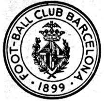
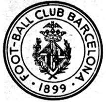

Esta liga es la liga nacional española, la cual fue creada en 1929 por 10 equipos diferentes.
El primer campeón de esta liga fue el FC BArcelona, auqnue el principal dominador durante los 10 primeros años fue el Athletic Club de Bilbao
 

Foto de los primeros escudos de estos equipo
Durante las historia de La Liga Española han pasado muchos jugadores muy importantes para la reputación de la liga
y para sus equipos, ya que ayudaban a ganar titulos internacionales y por tanto subir el reconocimiento de estos.
Algunos de los ejemplos más claros son Cristiano Ronaldo para el Real Madrid, ayudandoles a ganar 4 champions, o


En el mundo del fútbol hay lo que se llama las 5 grandes ligas las cuales son las 5 mejores ligas del mundo y todas ellas
pertencen a Europa.
Estas ligas contienen los mejores equipos del mundo y por tanto los mejores jugadores del mundo y son por tanto las 5
ligas que más dinero generan y que más competitivas son